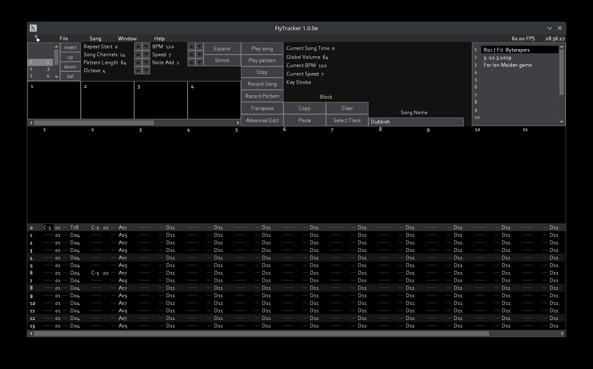
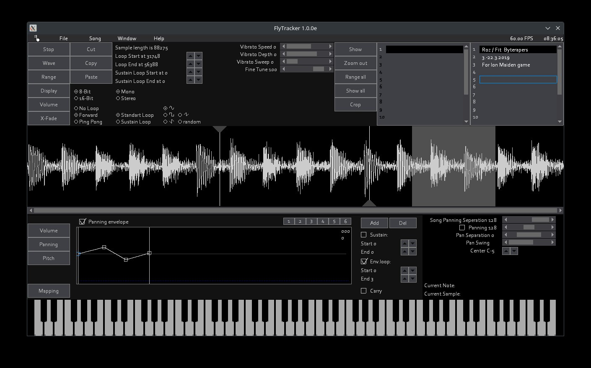

FlyTracker
(c) by Kirill Kranz .aka. Key-Real of Verry Important Pictures 2023 (kranzkirill@gmail.com)
Tralala Sound System (c) by Nikolay Nikolov .aka. nickysn 2023 (nickysn@gmail.com)


FlyTracker.zip (9.08.2023 Build)
How to compile
What You need:
What to do:
- Create a Folder (something like FlyTracker-Source)
- Open Terminal in your Folder and type:
- svn checkout https://svn.code.sf.net/p/tralala/code/trunk tralala-code
- git clone https://key-real@git.code.sf.net/p/vipgfx/code vipgfx-code
- git clone https://key-real@git.code.sf.net/p/tycoonuserinterface/code tycoonuserinterface-code
- git clone https://key-real@git.code.sf.net/p/flymusictracker/code flymusictracker-code
- Compile:
Navigate to ./flymusictracker-code/src
- Windows:
fpc FlyTracker.pas -B -Fu./FlyCode -Fu./FlyCode/Shared -Fu./FlyCode/Menu -Fu./FlyCode/Tracker -Fu./FlyCode/InstrumentEditor -Fu./FlyCode/PianoRoll -Fu./FlyCode/Networking -Fu../../vipgfx-code/src -Fu../../vipgfx-code/TTF/myFT1 -Fu../../tycoonuserinterface-code/src/tuicode -Fu../../tralala-code/src -Fu../../tralala-code/src/bindings/dsound
- Linux:
fpc FlyTracker.pas -B -Fu./FlyCode -Fu./FlyCode/Shared -Fu./FlyCode/Menu -Fu./FlyCode/Tracker -Fu./FlyCode/InstrumentEditor -Fu./FlyCode/PianoRoll -Fu./FlyCode/Networking -Fu../../vipgfx-code/src -Fu../../vipgfx-code/TTF/myFT1 -Fu../../tycoonuserinterface-code/src/tuicode -Fu../../tralala-code/src -Fu../../tralala-code/src/bindings/alsa -Fu../../tralala-code/src/bindings/pulseaudio
- Mac:
fpc FlyTracker.pas -dUSEPAS -B -Fu./FlyCode -Fu./FlyCode/Shared -Fu./FlyCode/Menu -Fu./FlyCode/Tracker -Fu./FlyCode/InstrumentEditor -Fu./FlyCode/PianoRoll -Fu./FlyCode/Networking -Fu../../vipgfx-code/src -Fu../../vipgfx-code/TTF/myFT1 -Fu../../tycoonuserinterface-code/src/tuicode -Fu../../tralala-code/src